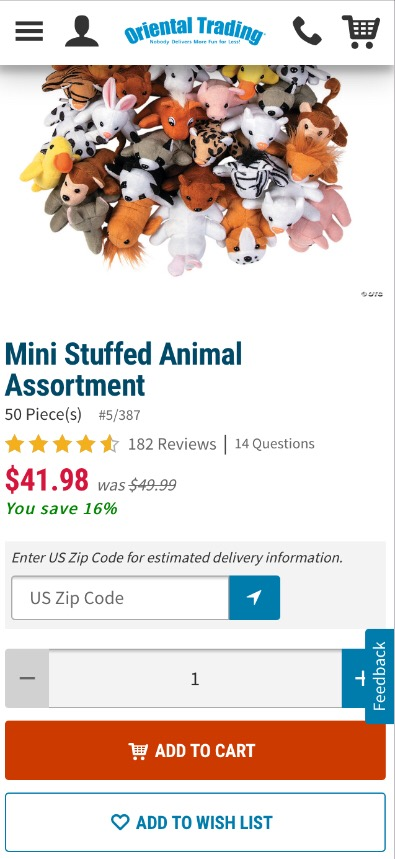
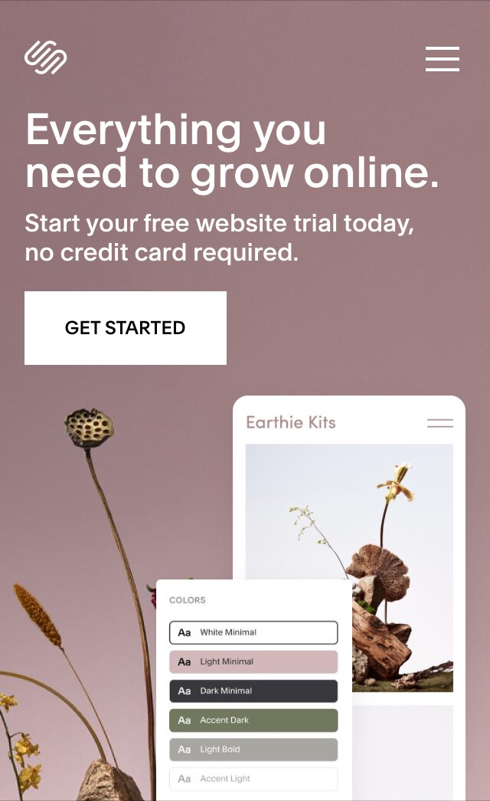
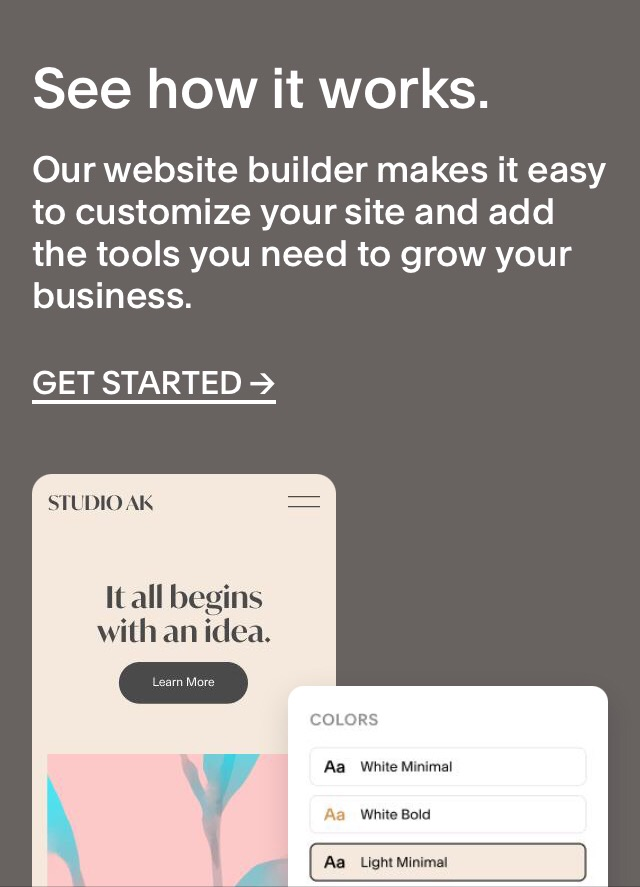
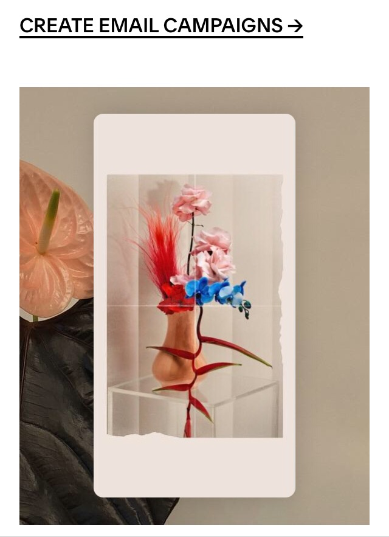
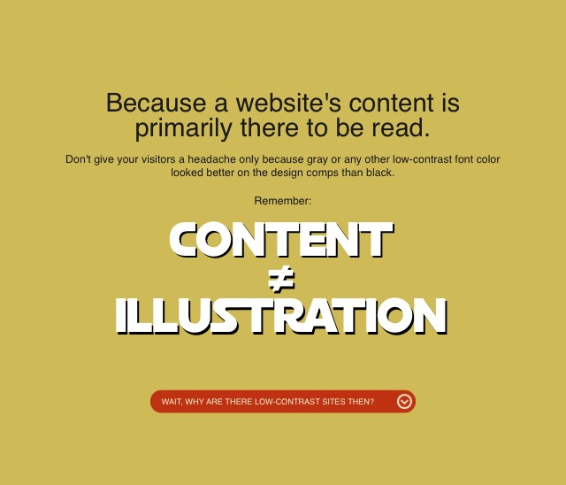
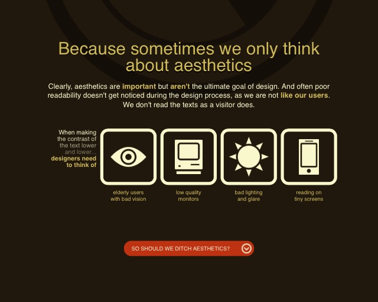

Fitts' Law
Oriental Trading Company

Fitts' Law basically says that the longer it takes for a user to get to the next button, the more likely you are to lose that customer because the difficulty of finding the links he needs will lead him to give up.
Oriental Trading Company is very easy to use both on the laptop and the mobile divice. Here, the mobile divice screen has a hamburger menu on the top left side that opens an easy to navigate menu. After you have chosen the category and the product, the "Add to Cart" box is very easy to find.
White Space and Clean Design
Squarespace



Squarespace uses white space very well. In the top photo, ther is a photo background. The Heading and paragraph aren't too close to each other, and there is plenty of space around it. There is plenty of space around the button, and the image is off to the bottom corner, leaving lots of space in between items.
The middle photo has a little more content on it, but it still follows the same principles as the top one, then placing the photo at the very bottom of the page, which still leaves adequate room between the paragraphs and the images.
the last photo is basically an image on top of an image. It works because the iPhone is white, isolating the image on the phone and providing plenty of white space around it.
PARC: Contrast
Contrast Rebellion


Contrast Rebellion is a website about contrast. It does an excellent job of showing the viewer what good contrast looks like. the first photo has a black and gray image on a white background. Those colors always contrast well. The construction-site orange button also shows up well against the white.
The second photo is a light, yellow-green color. Usually, white words wouldn't work on such a light background, but there is a black drop-shadow around the letters that contrast with the green, making the white letters pop. The black text contrasts well with the green, and that same orange button has plenty of contrast without vibrating.
The last photo is a dark-gray color. Once again, that orange button provides good contrast. The white text and images show up very well against the dark background and the green is light enough that it also shows up well against the dark gray.
There are basically five colors used; white, green, orange, dark gray and black. Although each page is primarily one color, they use enough of the colors from the other pages to keep the separate pages cohesive.